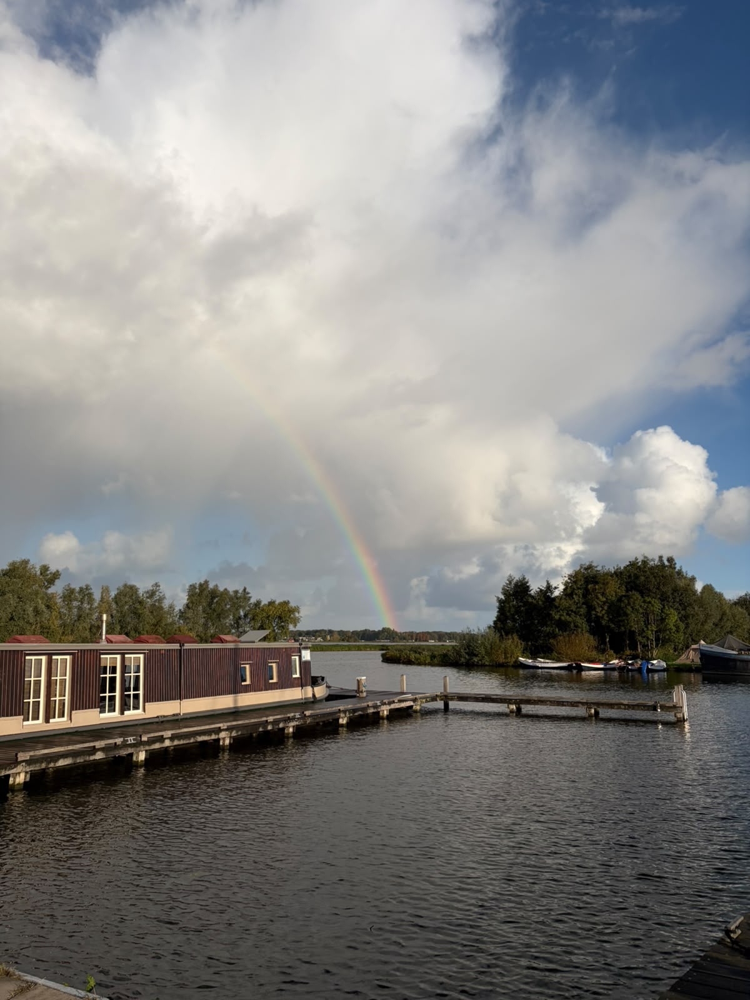
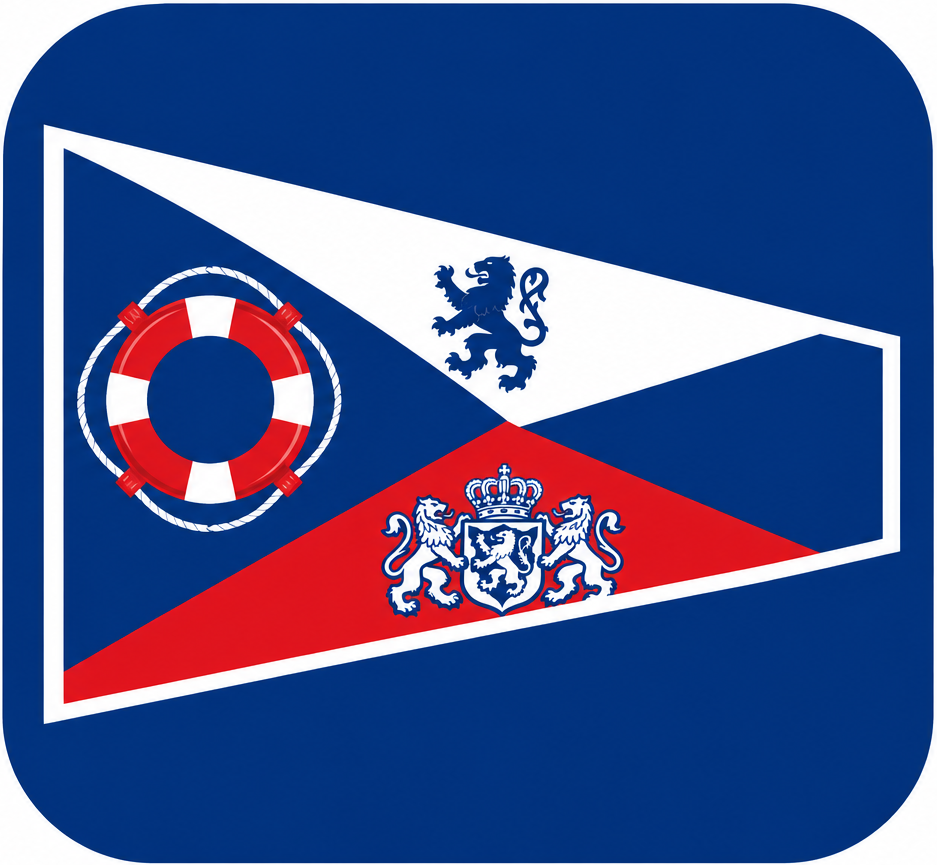
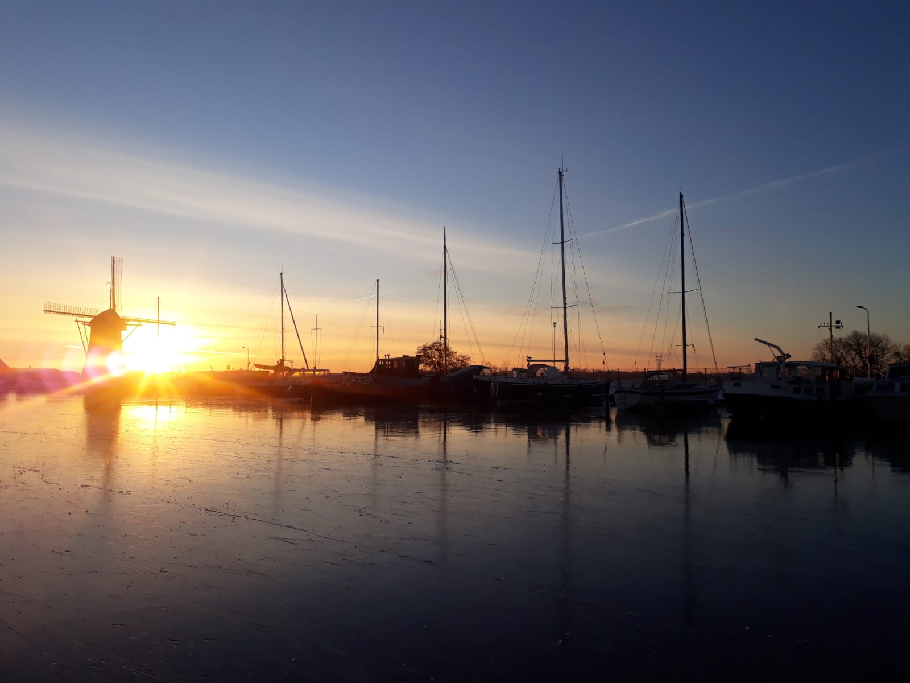
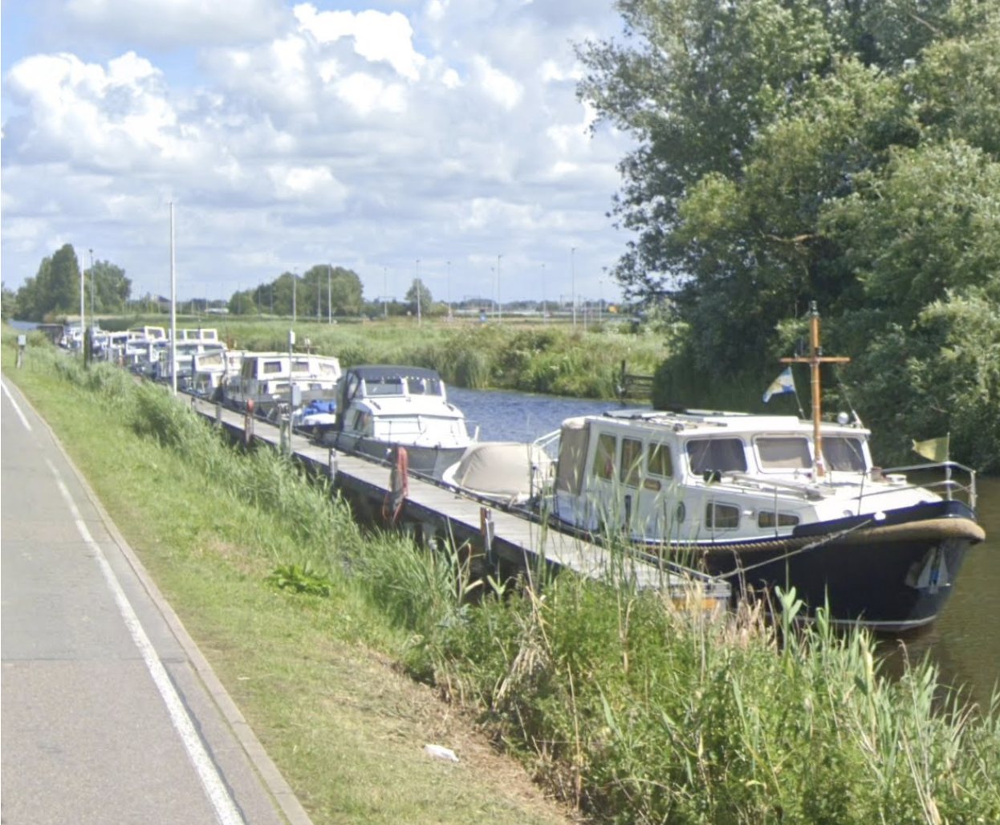

Warmond
Jachthaven Zijldijk
Onze haven ligt aan het Joppe en de Kagerplassen en is een mooi vertrekpunt voor tochten over het binnenwater.
Meer over Zijldijk ↗
WVS Noordwijk / Maritiem TeylingenWARMOND | NOORDWIJKWVS NOORDWIJK / MARITIEM TEYLINGEN
Onze watersportvereniging werd opgericht in 1977 en vormt sindsdien een hechte gemeenschap van enthousiaste watersporters. We verwelkomen leden en passanten op onze locaties in Warmond en Noordwijk.

OVER DE VERENIGING
Onze watersportvereniging werd opgericht in 1977 en vormt sindsdien een hechte gemeenschap van enthousiaste watersporters.
De haven is uitsluitend toegankelijk voor leden, maar passanten zijn van harte welkom wanneer er plaats beschikbaar is.
We tellen een groot aantal betrokken leden die trots zijn op “hun” haven. Dat zie je terug in de nette, goed onderhouden uitstraling van het terrein. Samen zorgen we ervoor dat de haven een plek blijft waar het gezellig en ontspannen vertoeven is.
Wanneer er iets moet gebeuren, steken we gezamenlijk de handen uit de mouwen. Onze leden zijn verantwoordelijk voor het onderhoud van de havens: van steigeronderhoud en elektra tot tuinieren en het organiseren van activiteiten. In onze gezellige haven is altijd plek voor een kop koffie en een goed gesprek.
We heten u van harte welkom bij onze vereniging!
ONZE LOCATIES
De vereniging heeft twee locaties: de haven aan de Zijldijk in Warmond en de lange steiger aan de Leidschevaart in Noordwijk. Bekijk de informatie per locatie en plan je bezoek.

Warmond
Onze haven ligt aan het Joppe en de Kagerplassen en is een mooi vertrekpunt voor tochten over het binnenwater.
Meer over Zijldijk ↗
Noordwijk
Aan de kust krijgt het water een ander ritme. De vereniging beschikt hier over een lange steiger aan de Leidschevaart, waar 15 leden hun ligplaats hebben.
Meer over Noordwijk ↗LOCATIES
Elke locatie heeft een eigen karakter. Bekijk de route, voorzieningen en informatie voor bezoekers.
LOCATIE · WARMOND
De haven ligt tegen het Joppe en de Kagerplassen aan. Vanuit de haven kunnen ook dagtochten gevaren worden via Leiden, Voorschoten, Rijnsburg, Katwijk en Oegstgeest.
In ongeveer vier uur is een mooi rondje te varen. In Katwijk kan worden aangelegd om het strand te bezoeken. Met de fiets ligt Leiden op ongeveer tien minuten fietsen. In de directe omgeving zijn een supermarkt en diverse restaurantjes te vinden.
Adres: Zijldijk, 2362 AE Warmond. De haven ligt tegenover het scoutingeiland en voor de molen.
LOCATIE · NOORDWIJK
Aan de kust krijgt het water een ander ritme. De vereniging beschikt hier over een lange steiger aan de Leidschevaart, waar 15 leden hun ligplaats hebben.
Vanaf de steiger kun je met de bus of fiets richting het centrum van Noordwijk voor horeca en het strand. Buslijnen zoals 20, 21 of 23 rijden in en rond Noordwijk en brengen je richting het centrum en de kust.
Adres: Leidse Vaart ter hoogte van Leidse Vaart 229, 2203 LC Noordwijk.
BEZOEKERS
Passanten zijn van harte welkom bij WVS Noordwijk / Maritiem Teylingen. De vereniging beschikt over een haven aan de Zijldijk in Warmond en een lange steiger in Noordwijk aan de Leidschevaart.
In Warmond kunt u bij havenkantoor de Julia tijdelijk aanleggen of telefonisch contact opnemen met havenmeester Luc. Hij wijst u een vrije plaats aan. In de zomer zijn er leden aanwezig die vragen kunnen beantwoorden.
In Noordwijk kunt u vooraf contact opnemen. De contactgegevens van de contactpersoon voor Noordwijk worden hier later toegevoegd.
TARIEVEN & FACILITEITEN
Liggeld: tot 10 meter € 15 per nacht. Voor langere boten en elektriciteit geldt een aanvullende vergoeding; vraag de havenmeester naar het exacte tarief.
Wifi is gratis. Na het afrekenen ontvangt u de wifi- en hekcode.
Havenmeester Warmond: Luc, 06-51978583.
PRAKTISCHE INFORMATIE
Vaar de Zijl af richting het Joppe in Warmond. Ongeveer 200 meter voor het opvaren van het Joppe ligt rechts het scoutingeiland. Vaar deze ingang in; rechts bevindt zich de haven van de vereniging.
Het haventerrein is omheind. Er is parkeergelegenheid net buiten de haven en op het terrein is een AED aanwezig.
Voor overnachting geldt een tarief vanaf € 15 per nacht voor boten tot 10 meter. Vraag de havenmeester naar de toeslag voor langere boten en elektriciteit.
Wifi is gratis. Na het afrekenen worden de wifi- en hekcode doorgegeven.
LID WORDEN
In principe kan iedereen lid worden zolang aan de criteria uit de statuten wordt voldaan. Voor beide locaties geldt een stop op de wachtlijst voor een ligplaats. Zodra de wachtlijst weer wordt opengesteld, kun je je aanmelden bij het secretariaat.
Lidmaatschap: €40 per jaar. Voor administratiekosten voor inschrijving wordt €300 gerekend.
Om lid te worden stuur je een e-mail naar Secretariswsvmt@gmail.com. Je ontvangt daarna de documenten voor inschrijving.
Een nieuw lid betaalt eenmalig inschrijfgeld en jaarlijkse contributie. Daarnaast is een kopie nodig van de polis waaruit blijkt dat de boot tenminste WA verzekerd is.
Aanmelden als lidVEILIG VAREN
Ga je het water op? Controleer de weersverwachting, je boot, kaarten en almanak, stremmingen en actuele vaarweginformatie en zorg dat je de vaarregels kent.
Voor verdere informatie verwijst de vereniging naar Varen doe je Samen!
CONTACT
Vragen over lidmaatschap of onze locaties? Neem contact op met het secretariaat of de havenmeester.
2362 AE Warmond
Tegenover het scoutingeiland en voor de molen.
Havenmeester Luc: 06-51978583
Leidse Vaart 229
2203 LC Noordwijk
Contactpersoon: telefoonnummer wordt later toegevoegd.